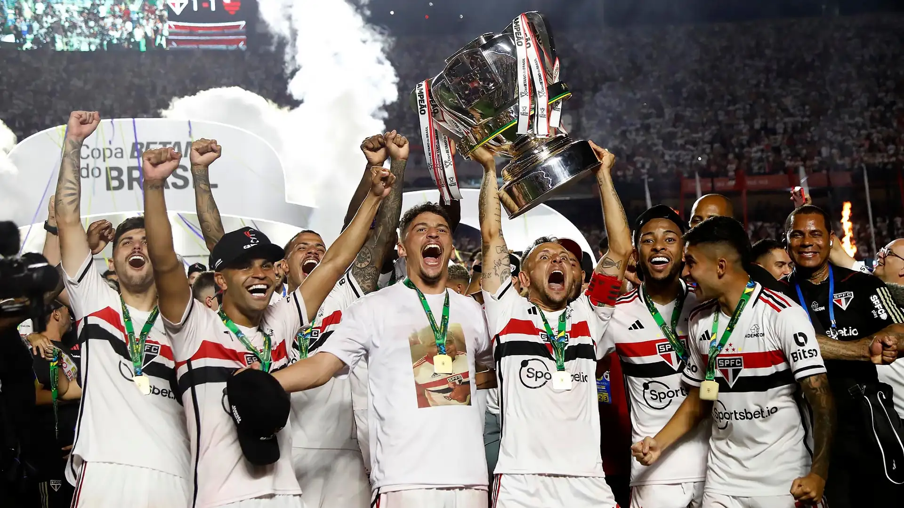
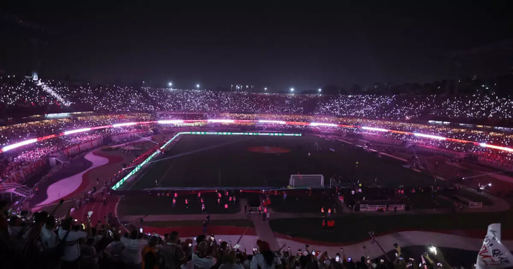

Principais títulos do São Paulo

Libertadores 2005

Mundial de Clubes 2005

Copa do Brasil 2024
Libertadores 2005
Mundial de Clubes 2005
Copa do Brasil 2024
O São Paulo Futebol Clube foi fundado em 25 de janeiro de 1930 e é um dos clubes mais vitoriosos do Brasil. Ao longo de sua história, o clube conquistou títulos importantes, incluindo três Copas Libertadores e três Mundiais de Clubes, além de diversos campeonatos nacionais e estaduais. O São Paulo é conhecido por revelar grandes talentos e ser o time de mais tradição no país. A camisa tricolor, nas cores vermelha, branca e preta, é um símbolo de glória no futebol brasileiro.
O Estádio do Morumbi, oficialmente chamado Estádio Cícero Pompeu de Toledo, é a casa do São Paulo Futebol Clube e um dos maiores estádios do Brasil, com capacidade para mais de 66 mil torcedores. Inaugurado em 1960, é um ícone da cidade de São Paulo, conhecido por sua grandiosidade e ambiente hostil durante os jogos do tricolor paulista o estádio tem fama de "El Morumbi te Mata". Além de sediar jogos importantes, o Morumbi também é palco de grandes eventos e shows internacionais. Sua arquitetura imponente e localização estratégica fazem dele um dos pontos turísticos mais visitados da capital paulista.
Nome: Luciano
Posição: Atacante
Número: 10
Nome: Calleri
Posição: Atacante
Número: 09
Nome: Lucas Moura
Posição: Atacante
Número: 07